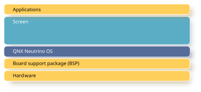

QNX Screen Graphics Subsystem is a graphics framework that provides all the functionality necessary to develop interactive user experiences.
Screen allows developers to create specific vertical applications using industry-standard tools in a UI development environment.

The Screen Graphics Subsystem Developer's Guide is intended for application developers . There are several code snippets included in this guide. These examples show what functions can be called and how they can be called by your application. Make sure you perform the appropriate error handling in your application. For readability, we’ve omitted any error checking and handling in the code snippets.
This table may help you find what you need in this guide:
| To find out about: | See: |
|---|---|
| Application development | Application Development |
| How to render | Rendering |
| How to use windows to display your content | Windowing |
| How to share resources (e.g., buffers, content) | Resource Sharing, Buffers |
| How to use your displays | Displaying the contents of windows |
| How to handle input | Input |
| How to handle events | Event Handling |
| How to use asynchronous notifications | Asynchronous Notifications |
| How to use permissions and privileges | Permissions and Privileges |
| Screen utilities | Screen Utilities and binaries |
| How to debug | Debugging |
| Screen Library Reference | Screen Library Reference |
| How to apply security policies | Security policies |
| How to configure Screen | Configuring Screen |
| Screen terminology | Glossary |